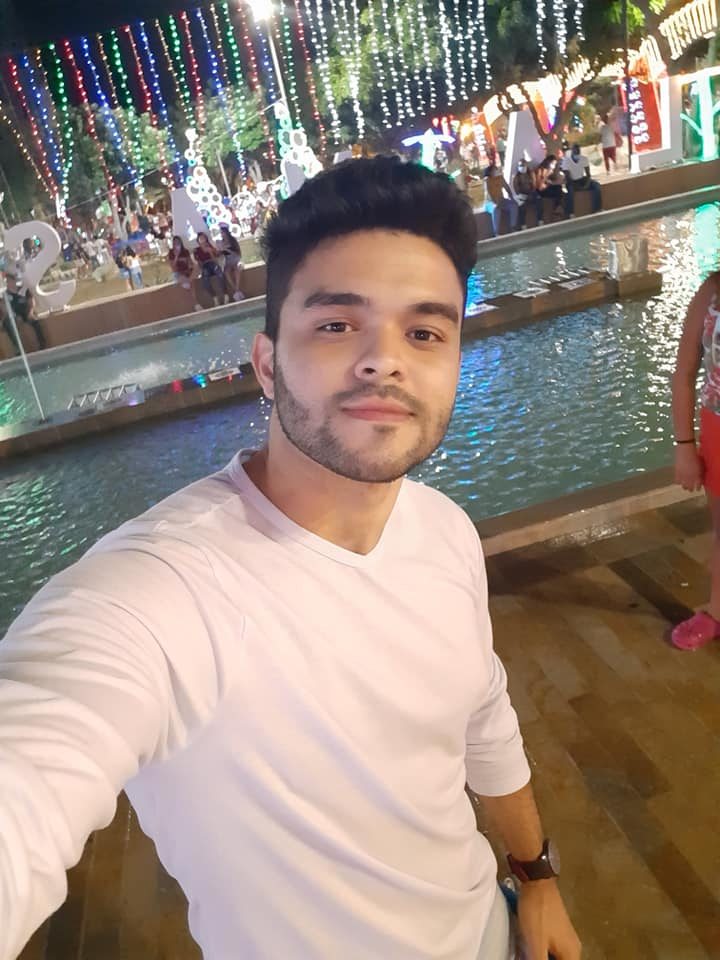

<!DOCTYPE html>
<html lang="en">
<head>
    <meta charset="UTF-8">
    <meta http-equiv="X-UA-COMPATIBLE" content="IE=edge">
    <meta name="viewport" content="width=device-width, initial-scale=1.0">
     <title>documento</title>
     <link rel="stylesheet" href="css/estilos.css">
     
     </head>
     <body>
         
     </body>
     </html></title>   
</head>

<body>
    <!--encabezado-->
    <header >
        
        <h1>html: etiquetas semanticas, listas y enlaces </h1>
          
         <link rel="stylesheet" href="css/estilos.css">
            
         
         
      
    
    
    
    </header>
    
    
    <nav >
      <ul  class="menu">
        <li><a href="index.html">inicio</a></li>
        <li>
          <a href="#">temas</a>
           <ul class="dropdown">
             <li><a href="tema1.html">tema1</a></li>
             <li><a href="tema2.html">tema2</a></li>
           </ul>


        
        </li>
        <li>
          <a href="#">recursos digitales</a>
            <ul class="dropdown">
              <li><a href="recurso1.html">recurso1</a></li>
              <li><a href="recurso2.html">recurso2</a></li>
            </ul>
        </li>
        <li>
          <a href="#">aprendizaje</a>
            <ul class="dropdown">
              <li><a href="">actividad1</a></li>
              <li><a href="">actividad2</a></li>
            </ul>
        </li>
        <li><a href="autor.html">acerca del creador</a></li>
      </ul>
    </nav>
   

    
    <!--barra del menu horizontal-->
    
        
        
         <!--menu central-->
    
          
        </aside> 
       
        
        <section>
        
        
        <article>


        </article>
            <h3>perfil del creador </h3>
            
            <p> mi nombre es jose quintero estudiante de ingenieria de sistemas en  la universidad unad abierta y a distancia unad
                vivo actualmente en valledupar-colombia tengo 24 años 
            </p>
        
          

          
                 
           <p class="centrado">

           </p>
        </section>
      </div> 
   
     <div>
       <footer>
         <p>
          diseño, codigo html 5 y programacion hecha a mano por mi utilizando una herramienta  de software libre  
          creada el 21/06/2021 por jose quintero
          whatsapp : 3183816628
 
        </p>
       </footer>
        </div>
        
        
    
</body>
</html>